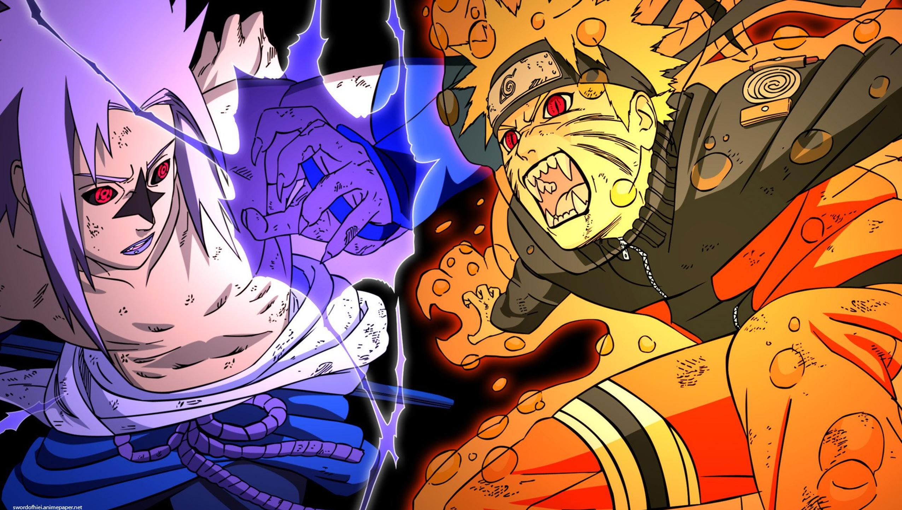

Naruto Uzumaki, a mischievous adolescent ninja, struggles as he searches for recognition and dreams of becoming the Hokage, the village's leader and strongest ninja.
Many years ago, in the hidden village of Konoha, lived a great demon fox. When it swung one of it's nine tails, a tsunami occurred. The fourth hokage sealed this demon fox inside a boy in exchange for his own life. Naruto was that boy, and he grew up with no family, and the villagers hated him thinking that he himself was the demon fox. Naruto's dream is to become Hokage, and have the villagers acknowledge him.
Naruto:shippuden: Naruto Uzumaki wants to be the best ninja in the land. He's done well so far, but with the looming danger posed by the mysterious Akatsuki organization, Naruto knows he must train harder than ever and leaves his village for intense exercises that will push him to his limits.